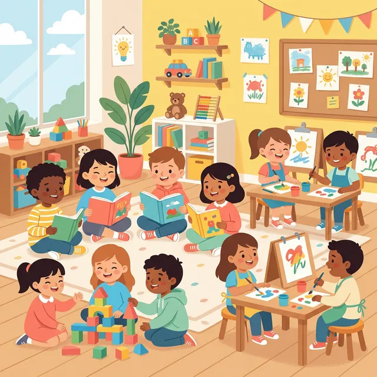

Our Programs
Nurturing Every Stage of Growth
At Bubbles Playschool, we follow a thoughtfully designed curriculum that blends play-based learning with structured activities. Each program is tailored to the developmental needs of its age group, ensuring your child receives the right mix of fun, learning, and social interaction.
Toddler
Our Toddler program focuses on sensory exploration, motor skill development, and gentle social introduction. Through structured play and creative activities, toddlers begin their learning journey in a warm, secure environment.
- Sensory play with sand, water, and textures
- Fine and gross motor skill activities
- Introduction to colours, shapes, and sounds
- Circle time songs and rhymes
- Free play and social interaction

Playgroup
Our Playgroup program introduces more structured activities while maintaining a joyful, play-based atmosphere. Children begin building foundational skills in literacy, numeracy, and creative expression.
- Prewriting skills
- Introduction to Alphabets and Numbers
- Introduction to G.K topics
- Colours and shapes
- Story time
- Rhymes and dance
- Social interaction with other children
- Gross motor and Fine motor skills

Nursery
The Nursery program builds on the foundation of earlier years, introducing more complex concepts in language and mathematics. Children develop their phonics, counting, and tracing skills through guided discovery.
- Prewriting skills
- A-Z recognition
- Introduction to phonics
- Tracing and writing letters
- Numbers
- Counting objects
- Pre math concepts

PP1
PP1 dives into pre-literacy and pre-numeracy concepts, preparing children for the next step in their educational journey. Through phonics, creative arts, and early mathematics, children develop confidence and a genuine love for learning.
- Phonics, letter recognition, and writing (Aa – Zz)
- Introduction to blends and digraphs
- Creative arts: drawing, painting, clay work
- General knowledge and environmental awareness
- Team-based group activities

PP2
Our PP2 program is focused on school readiness. Children practice reading, writing, and critical thinking in preparation for their transition to primary school. The curriculum ensures they are confident, curious, and well-prepared for the next chapter.
- Reading fluency and comprehension
- Writing: sentences
- Introduction to lens and diagrams
- Concepts in maths
- General knowledge and environmental awareness
- Public speaking and presentation skills
Our Facilities
Modern, child-friendly spaces designed for exploration and growth.
Play Area
Safe outdoor and indoor play zones with slides, swings, and creative play structures.
Library Corner
A cozy reading nook stocked with colourful picture books, story collections, and learning materials.
Art Room
A dedicated space for painting, crafting, and creative expression with child-safe art supplies.
Music & Dance
A vibrant space for creative expression, rhythm, and movement through music and dance.
Sports & Physical Development
Expert-led sports and physical activities designed to build strength, coordination, and confidence.